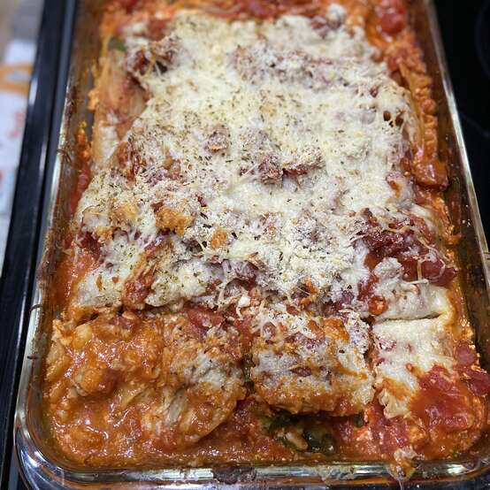

Vegeterian Lasagna Recipe

Description
A tasty treat that will delight the whole family - even the meat-eaters! Not really.. please don't make this;
this is just a html project, not a real recipe. I have no idea if this is safe to eat!
Ingredients
- 1 (16 ounce) can diced tomatoes
- 1 (16 ounce) package instant lasagna noodles
- 2 teapons of dried oregano
- 2 summer squash, diced
Steps
- Preheat the oven to 400 degrees Fahrenheit
- Do a little dance
- Make a little love
- Get down tonight
- Order pizza instead